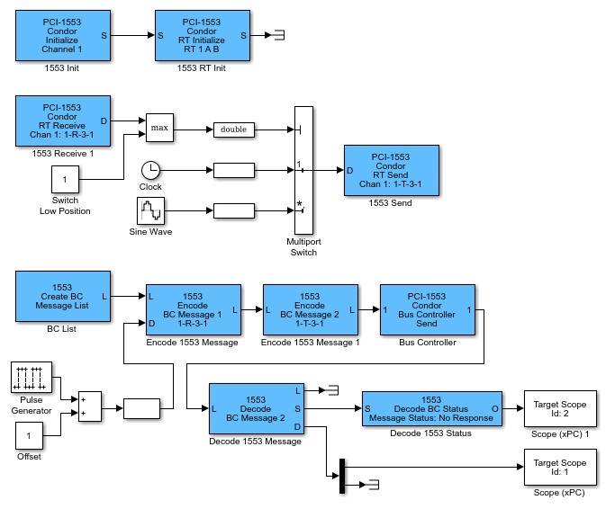

The following example uses PCI blocks. It describes how you can use a Remote Terminal
and Bus Controller in a model. This model combines the three models,
RTInit, RTSample, and
BCSample.
The RTBCSample real-time application executes on a target computer
with a multifunction board. It shows how to configure and use a single board as a Bus
Controller and Remote Terminal. You can also run this model in one target computer with
two different PCI-1553 boards.

In this example, the two Encode BC Message blocks each create a message, for a total
of two, in the list. The message created in the first Encode BC Message block is a
receive message. The direction of a message is defined from the point of view of the
Remote Terminal. The Direction parameter of the block
has a value of R (BC->RT). The 1553 Encode BC Message block
creates message 1, one 16-bit word, to be sent to Remote Terminal 1, sub address 3. This
word has a value of either 1 or 2. An
Add block creates this value by adding the constant value
1 to the output of the Pulse Generator, which outputs either
0 or 1.
Message 2 of Bus Controller message list is a command for Remote Terminal 1, sub
address 3, to send one word. From the RTSample model, that data word
comes back containing either the clock or the sine wave data.
The PCI-1553 Bus Controller Send block takes a fully formed list of message buffers and sends it. It waits for the messages to be sent and the response to be received. The PCI-1553 Bus Controller Send block has a programmable maximum wait time parameter (Maximum wait time (microseconds)). In this model, the maximum wait time is 1000 microseconds.
The response message list from the PCI-1553 Bus Controller Send block has the same length as the list that was sent. The responses are found in the same position in the list as the corresponding command. In this case, the command to the Remote Terminal to send data is message number 2. The data that is returned is also message number 2 in the response list. In this example, the Decode BC Message block check message 2 only. Decode BC Message blocks can be in arbitrary order on the list. To avoid confusion, put them in numerical order. This example does not check message 1. You can add another Decode BC Message block to check message 1. In this case, only the status is useful because the data is exactly what was sent.
The Decode BC Message block has the following outputs.
L — Message list passed to other Decode BC Message blocks. If your model contains only one Decode BC Message block, connect the signal to a terminator or ground.
S — Status information. The Decode BC Status block extracts individual status bits from this status. To get multiple status bits, use multiple Decode BC Status blocks and feed, in parallel, the same signal to the S ports.
D — A vector of 32 short integers with the data from that message.
Output from the Decode BC Message block has the maximum message width of 32
uint16 values. The actual message determines how many of
these values are significant. In this example, only the first value is
significant. The block sends the last 31 values to a terminator.